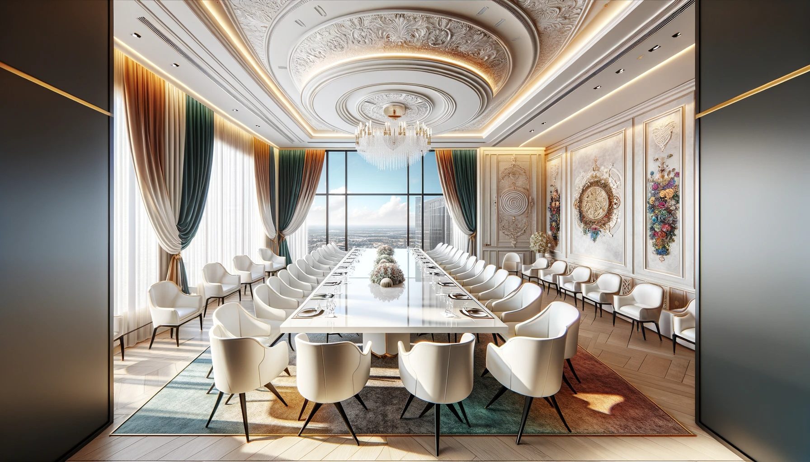
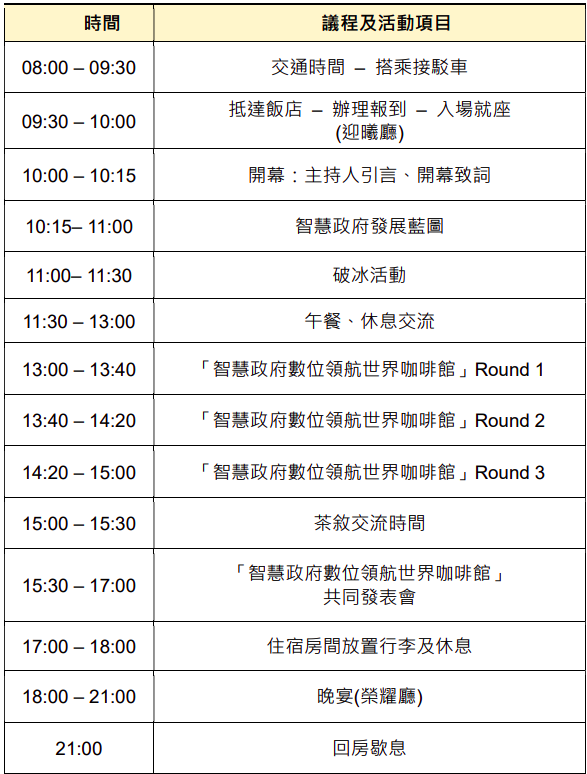
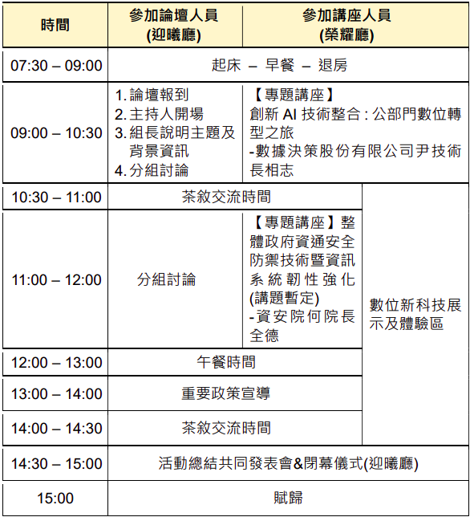

✔️ 會議目的及說明
2023 年全國資訊主管聯席會以「凝聚我國智慧政府發展共識」為主題，安排世界咖啡館活動促進與會人員交流、透過多元方式溝通互動及經驗分享，型塑我國智慧政府未來發展共識，並研擬 2026 年啟動之智慧政府計畫框架與推動方向。
第 1 天世界咖啡館活動由全部與會人員就智慧政府相關議題廣泛討論；第二天則分 2 組進行：
- 智慧政府新航向發展論壇：邀請行政院相關部會資訊主管及資訊策略規劃人員參與，透過收納前㇐日之多元溝通與互動交流結論，並進㇐步研討以確立智慧政府數位領航發展計畫框架及推動方向。
- 專題講座及數位新科技體驗：辦理資訊科技應用專題講座及「數位新科技展示及體驗區」，讓其他與會人員深入了解新興科技創新應用，提升政府資訊安全防護能力及數位服務量能。

活動流程


✔️ 報名資訊
(㇐)報名期限：即日起至 2023 年 11 月 15 日(星期三)止。
(二)報名對象及方式：
- 報名對象：行政院、立法院、考試院，及其所屬二、三級設置資訊單位之機關；各直轄市與縣市政府及其所屬設置資訊單位之機關。各機關報名人數至多 3 名(資訊主管、副主管及資訊策略規劃人員 1 名)。
- 採線上報名，請點選以下網址報名：https://s.moda.gov.tw/FpXffahBN54Y倘報名後因故不克參加會議，敬請至少於會議前 7 天告知，以便辦理取消報名及住宿作業。
(三)會議資料下載：響應節能減碳，論壇現場將不提供紙本資料。如與會者有需求請自行下載，或請自行攜帶資訊設備與會。會議資料將於 2023 年 11 月 30 日(星期四)前分享於雲端資料夾 (會議資料網址 https://s.moda.gov.tw/AeiFtdhwLtXF)。
(四)注意事項：
- 會議時間、場地，如因故變更，將以電子郵件通知，不另行文。
- 活動期間拍攝照片、影片，將於網站或書面公開利用。
(五)地理位置及交通資訊：
1.會議地點：群策翡翠灣溫泉飯店(新北市萬里區海景路㇐號)
2.交通方式：
-
(1)接駁車：
- A.前往會場搭乘時間及地點：將於 8:00 在台北火車站及南港火車站發車，詳細上車地點於活動 1 週前以電子郵件通知。
- B.回程搭乘時間及地點：活動結束 15:00 在群策翡翠灣溫泉飯店搭乘。
- A.中山高速公路－八堵交流道下，左轉基金公路，經萬里至翡翠灣。
- B. 北二高速公路－萬里交流道下，左轉基金公路，經萬里至翡翠灣。
- C.濱海公路－往淡水金山至翡翠灣。
- D.陽金公路－從陽明山往金山，接濱海公路至翡翠灣。
3.會議地點於「群策翡翠灣溫泉飯店」，住宿地點於「群策翡翠灣溫泉飯店」及「福泰翡翠灣渡假飯店」。
4.住宿地點：「群策翡翠灣溫泉飯店」及「福泰翡翠灣渡假飯店」。